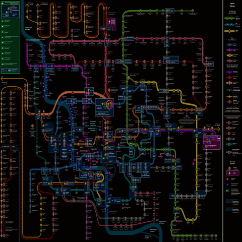
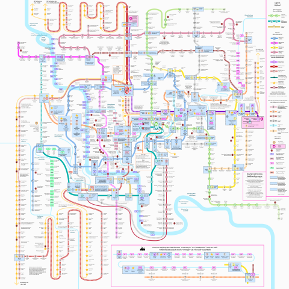

Map of metro systems in Greater Bangkok
แผนที่ระบบขนส่งมวลชนในกรุงเทพและปริมณฑล


Thai ภาษาไทย
นี่คือแผนที่ของระบบรถไฟฟ้าและระบบขนส่งมวลชนอื่นๆ ในกรุงเทพฯ และปริมณฑล แผนที่นี้สร้างโดยใช้โปรแกรม
Inkscape
แผนที่นี้ใช้ฟอนต์
Monda
และ
Sarabun
English ภาษาอังกฤษ
This is a Map of mass rapid transit systems in Bangkok Metropolitan Region. I created this map with
Inkscape
This map uses the typefaces
Monda
and
Sarabun
.
Inspiration
I would like to thank the creator of these maps for inspiration.
2023 Map of Bangkok mass rapid transit
by
Zeddlex
on Wikimedia Commons
Bangkok Transit Map
by
Oran Viriyincy (Ohm)
Bangkok MRT Map
by
LivingPop Team
(
I also use their information to approximate the route for MRT Orange Line.
)
Free and open-source licenses
viewerjs
by
fengyuanchen
, licensed under MIT license
Airplane SVG
by
magicvince
, licensed under CC0
Bus SVG
by
Public Transport Victoria
, licensed under CC0
ISO 7001 PI TF 004.svg
by
Clemenspool
, licensed under CC0
Pin point location SVG
by
Eatcha
, licensed under CC0
[Link to this Github repo]
{kind=link}
{kind=link}
{kind=link}
{kind=link}
{kind=link}